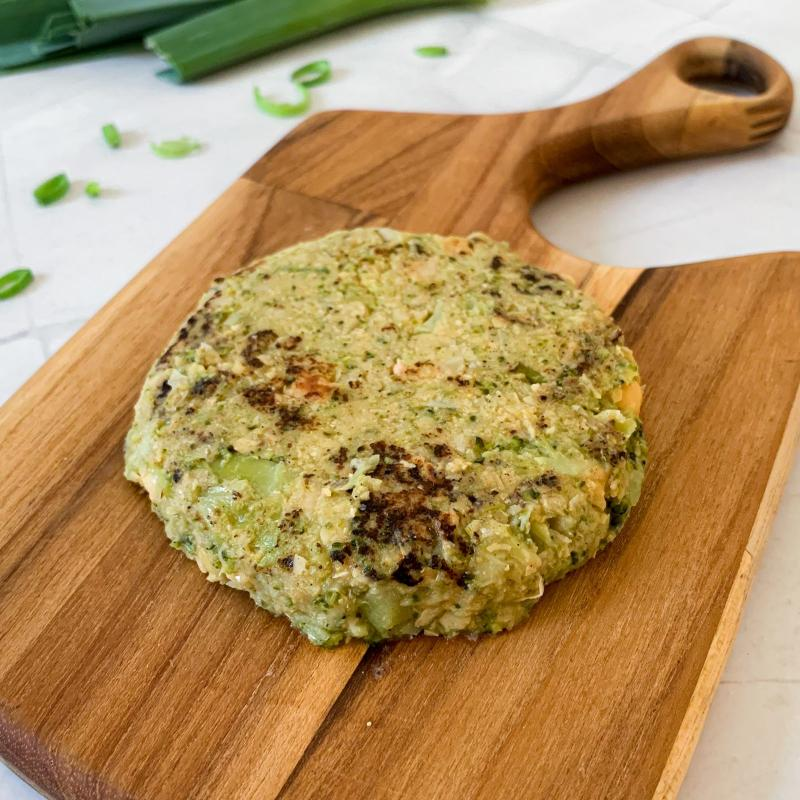
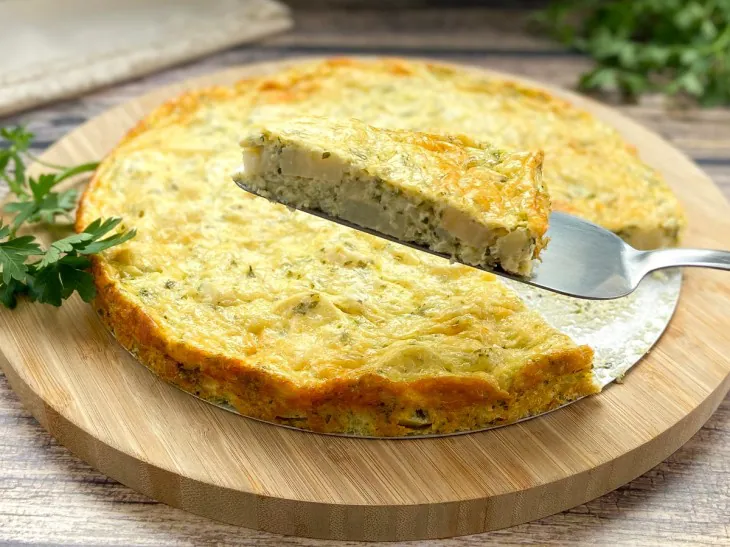
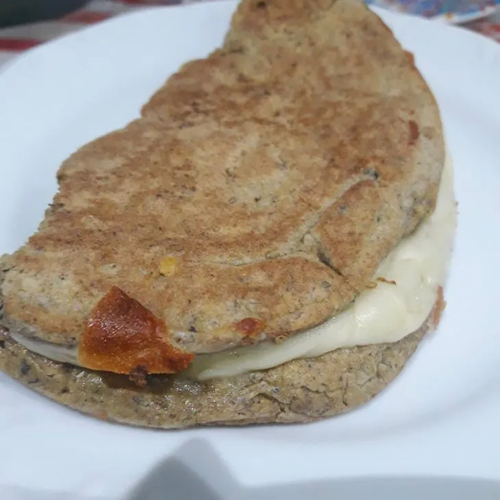

Polpetone de Brócolis Gratinado.
Ingredientes:
- 1 Brócolis
- Farinha de Rosca
- 1 Ovo
- Requeijão
- Queijo parmesão ralado
Modo de preparo:
- Em uma panela, cozinhe o brócolis.
- Após cozinhar, amasse e misture a farinha e o ovo até dar liga.
- Faça formatos de disco ou bolinhas.
- Coloque os discos na Air-Fryer, passe o requeijão e polvilhe o parmesão.
- Deixe assar por 15 minutos a 180ºC.

Torta de Palmito.
Ingredientes:
- Palmito em rodelas
- 3 Ovos
- 1 Caixinha de Creme de Leite
- 150g de Queijo Ralado
- 1/2 xícara de cebolinha fresca
Modo de preparo:
- Corte o palmito em pequenos pedaços.
- Misture todos os ingredientes em um recipiente.
- Transfira todos os ingredientes para uma forma.
- Polvilhe queijo parmesão ralado por cima.
- Leve ao forno e deixe assar por 30 minutos a 180ºC.

Omelete de Abobrinha.
Ingredientes:
- 2 Ovos
- 1 Colher de sopa de farinha de linhaça
- 1 Colher de sopa de queijo parmesão ralado
- Orégano a gosto
Modo de preparo:
- Coloque em um recipiente todos os ingredientes e misture bem, até formar uma mistura homogênea.
- Unte uma frigideira com azeite, despeje a mistura e deixe firmar.
- Vire a massa e deixe dourar o outro lado.
- Agora é só colocar o recheio que preferir e servir. Bom apetite.